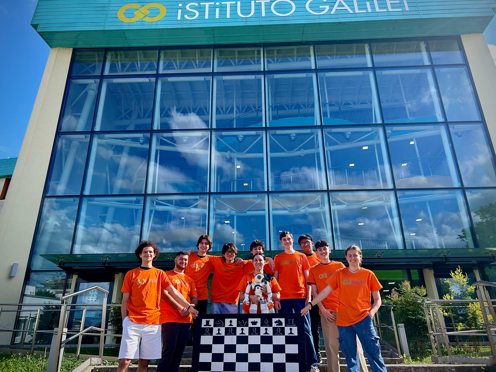

{{component["name"]}}
{{component["name"]}}

Siamo dieci ragazzi che frequentano l'ISS G. Galilei di Mirandola (MO): Andrea, Filippo, Alessandro, Martin, Eleonora, Francesco, Mia, Giuseppe, Giovanni e Gama. Grazie al prof. Alberto Michelini, abbiamo avuto la possibilità di entrare nel vasto mondo della robotica.
TeamIl progetto di quest'anno è sponsorizzato dal circolo scacchistico Club 64. Offre un ambiente accogliente per giocatori di tutti i livelli, con attività che spaziano da partite amatoriali a tornei ufficiali. Organizza corsi di formazione, eventi tematici e incontri settimanali per appassionati. Il club si impegna a diffondere la cultura scacchistica e a favorire lo sviluppo delle abilità strategiche e logiche dei suoi membri.
Club 64
NAO è un robot umanoide avanzato dotato di sistemi per la percezione dell’ambiente. Grazie a due videocamere e quattro microfoni direzionali, è in grado di vedere e ascoltare, potendo così interagire con l’ambiente circostante e riconoscere volti e suoni. È inoltre equipaggiato con due altoparlanti che gli permettono di comunicare in diverse lingue. Nao dispone anche di sensori tattili, che gli consentono di percepire il contatto fisico e dare dei feedback. Per programmare e personalizzare il comportamento di NAO, utilizziamo il software "Choregraphe", un ambiente di programmazione a blocchi che permette di creare sequenze di azioni e movimenti.
See more